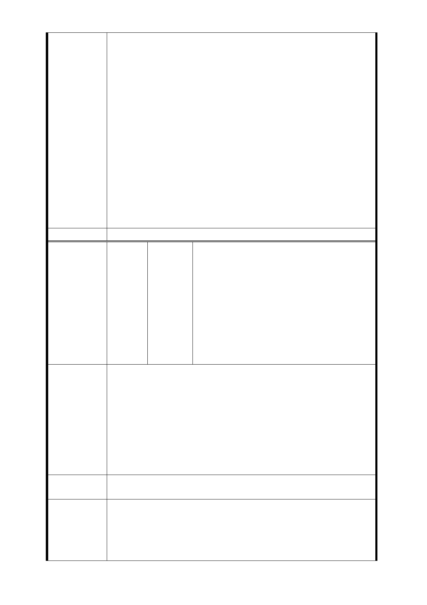

或民間應召開公聽會，公開徵求意見。」，故本府捷運工程局
辦理萬大線規劃時，即針對初步規劃路線與概略設站地點等
，於路線所經過之地區（臺北市－中正區、萬華區，新北市
－永和區、中和區、土城區及樹林區）共辦理 6 場公聽會，
以徵求民眾意見，做為後續規劃作業之參考，。捷運萬大線
自 93 年起進行規劃，94 年辦理公聽會，於完成規劃報告書
報請交通部審議，經交通部歷次審議與本府捷運工程局補充
意見後，核轉行政院核定路線。LG04 站原規劃位置，即設置
於萬大路、東園街路口並未變更，係敘述車站位置時，以較
明顯地標「萬大國小」加強辨識。
2.本府捷運工程局業已研擬 LG04 車站北移替代方案，擬使用
東園國小、萬大國小及天主教玫瑰堂部分土地，提臺北市都
市計畫委員會專案小組審查。
3.103 年 9 月 16 日第四次專案小組委員審查意見：LG04 車
站使用東園國小學校用地，取消捷八土地開發區，維持捷七
土地開發區、增設捷九土地開發區（面積 423 平方公尺）。
委員會決議
洪○淑、黃○吟、廖○澤、洪○長、洪○
壽、陳○月、楊○傑、楊○茂、龔劉○卿、
陳○通、吳○修、楊○能、韋○豪、楊○
福、楊○筑、陳郭○美、陳吳○珠、鄭○
編
號 捷八-2
陳情人
財、藍洪○美、劉○雄、黃○山、羅○林、
詹○花、楊○銘、楊○能、張○信、趙○
麗、陳○菊、洪○棠、陳○瑩、李○媚、
詹○如、嚴○華、楊○雄、陳○政、簡李
○珠、吳○雄、黃○祥、黃○成、周○立、
周○賢
關於捷運萬大線 LG04 站點之設置與變更，北市捷運局事前全
然未依大眾捷運法規定召開公聽會或說明會，甚至沒有任何
形式的意見調查；僅以一紙公文，就要求當地限建兩年，並
接受聯合開發或土地徵收，決策過程草率，枉顧居民、地主
陳 情 理 由 之權益。
況且居民多已於此定居甚久，房舍被拆後恐面臨無以生活之
窘境，居民在此安居樂業數十年，這裡不僅是遮風避雨的家
園，更有賴以維生的店面，捷運局卻以一紙公文即要毀掉人
民辛苦打拼的成果，嚴重影響民眾的居住和生計。
建議辦法
誠心陳請北市捷運局針對捷運設置地點先向人民召開公聽會
，莫違反程序正益奪房搶地，侵犯人民財產權。
1.本府捷運工程局為配合萬大線（臺北市段）各場站設施所
市府回應
意見
須之捷運工程用地辦理變更都市計畫作業，基於維護相關土
地所有權人與建物所有權人之權益，本府捷運工程局於本府
都市發展局辦理都市計畫變更案公展說明會之前先行於 100
年 11 月 25 日、29 日、30 日舉辦 4 場說明會邀請土地及建
- 131 -